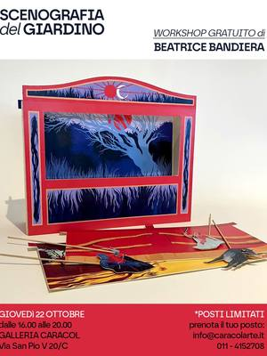
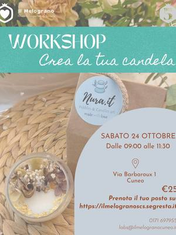
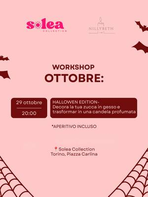
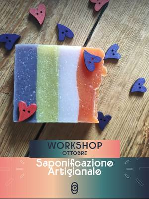
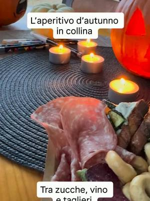
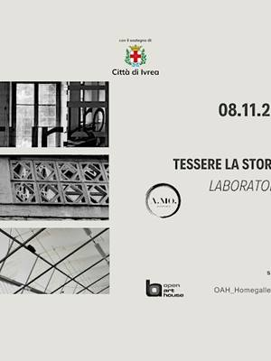
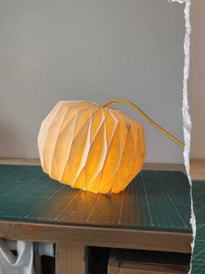
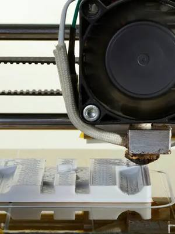

Altri workshop e laboratori a Torino e dintorni
Workshop di candele, saponi, fotografia, origami, rilegatura, fablab e altri laboratori a Torino e dintorni.
Cerca con tutti i filtri28 attività in arrivo · aggiornato il 21 ottobre 2026

gio22ottAltroScenografia del giardino: teatrino di cartagiovedì 22 ottobre, 16:00–20:00San Salvario (TO) · Gratiscon Beatrice Bandiera per Galleria Caracol- ven23ottAltroMasterclass: crea la tua lampadavenerdì 23 ottobre, 17:00Centro (TO)con Creative Cables
 ven23ottAltroAperitivo d’autunno: intaglio della zuccavenerdì 23 ottobre, 18:00–21:00Pino Torinese (TO) · 15 €con Il Giardino di Rosero
ven23ottAltroAperitivo d’autunno: intaglio della zuccavenerdì 23 ottobre, 18:00–21:00Pino Torinese (TO) · 15 €con Il Giardino di Rosero
sab24ottAltroWorkshop di candele: atmosfere d’autunnosabato 24 ottobre, 09:00–11:30Cuneo (CN)con Cooperativa Il Melograno con Nura.it- sab24ottAltroFiori di carta: il banchetto al mercatosabato 24 ottobre, 09:00–12:00Ivrea (TO)con Stefano Fiorina per ZAC!
- sab24ottAltroLavori pubblici: cura del Movicentrosabato 24 ottobre, 09:30Ivrea (TO)con ZAC! con Part collettivo
- dom25ottAltroWorkshop di rilegatura: quaderno giapponesedomenica 25 ottobre, 09:30–12:00Borgo Po (TO) · · esauritocon Cinzia Rastiello per TObed
- dom25ottAltroLa spirale che riconnette: laboratoriodomenica 25 ottobre, 09:30–18:30Chiaverano (TO)con Collettivo Le Ife per ZAC!
- mer28ottAltroHow To: taglio laser di Halloweenmercoledì 28 ottobre, 18:00–20:00Lingotto (TO)con Fablab Torino
- mer28ottAltroOpen Studio: serata creativa liberamercoledì 28 ottobre, 18:30–22:00Aurora (TO) · da 8 €con Velvet Creative Lab

gio29ottAltroZucca candela: Halloween con aperitivogiovedì 29 ottobre, 20:00–21:30Centro (TO) · 49 €con Nillybeth Lab per Solea Collection
sab31ottAltroWorkshop di saponificazione: il tuo saponesabato 31 ottobre, 09:00–13:00Pinerolo (TO) · 50 €con Courtesia per Nodo Concept Space
sab31ottAltroHalloween Night: intaglio della zuccasabato 31 ottobre, 18:00–21:00Pino Torinese (TO) · 15 €con Il Giardino di Rosero- dal3novAltroGiocare coi segni: introduzione alla LISda martedì 3 novembre a martedì 15 dicembre, 18:30Vanchiglietta (TO)con Bocciofila Vanchiglietta
- dom8novAltroWorkshop di fotografia: ritratto all’apertodomenica 8 novembre, 09:00–13:00San Salvario (TO) · 97 €con Aldo Diazzi per WorkshopFotografici.eu
- dom8novAltroWorkshop di street photography in centrodomenica 8 novembre, 14:00–17:00Centro (TO) · 55 €con Aldo Diazzi per WorkshopFotografici.eu

dom8novAltroTessere la storia: intreccio fotograficodomenica 8 novembre, 14:30–17:30Ivrea (TO) · da 15 €con Anastasia Moro per Open Art House mar10novAltroThe Fragrance Bar: profumatore per la casamartedì 10 novembreSan Salvario (TO) · 50 €con Aperi Pods
mar10novAltroThe Fragrance Bar: profumatore per la casamartedì 10 novembreSan Salvario (TO) · 50 €con Aperi Pods
ven13novAltroWorkshop di origami: paralume da tavolovenerdì 13 novembre, 17:00–19:00San Salvario (TO) · 40 €con Origami Pop- sab14novAltroWorkshop di candele: fatte a manosabato 14 novembre, 09:00–13:00Borgo Po (TO) · · esauritocon Il Tempio Creativo per TObed
- sab21novAltroWorkshop di origami: paralume dipintosabato 21 novembre, 16:00–19:00San Salvario (TO) · 40 €con Origami Pop

mer25novAltroHow To: stampa 3D per iniziaremercoledì 25 novembre, 18:00–19:30Lingotto (TO) · · esauritocon Fablab Torino- sab28novAltroLanterne di Natale: laboratorio creativosabato 28 novembre, 09:30–17:00Borgo Po (TO)con Laura Cortinovis per TObed
- dom29novAltroIntensivo di origami: lampada con telaiodomenica 29 novembre, 14:00–19:00San Salvario (TO) · 80 €con Origami Pop
- mer9dicAltroHow To: fresatrice CNC di Natalemercoledì 9 dicembre, 18:00–20:00Lingotto (TO)con Damiano Frison per Fablab Torino
- sab26dicAltroPhotowalk: passeggiata fotografica in grupposabato 26 dicembre, 10:30–12:30Quadrilatero (TO) · 2 €con BlaBla Photowalk Events
- ognia sceltaAltroCascina Roccafranca: corsi della stagioneData a sceltaMirafiori (TO)con Cascina Roccafranca
 ognia sceltaAltroTappezzeria e restyling: pouf e mobiliData a sceltaBarriera di Milano (TO) · da 20 €con Magazzini Tessili
ognia sceltaAltroTappezzeria e restyling: pouf e mobiliData a sceltaBarriera di Milano (TO) · da 20 €con Magazzini Tessili